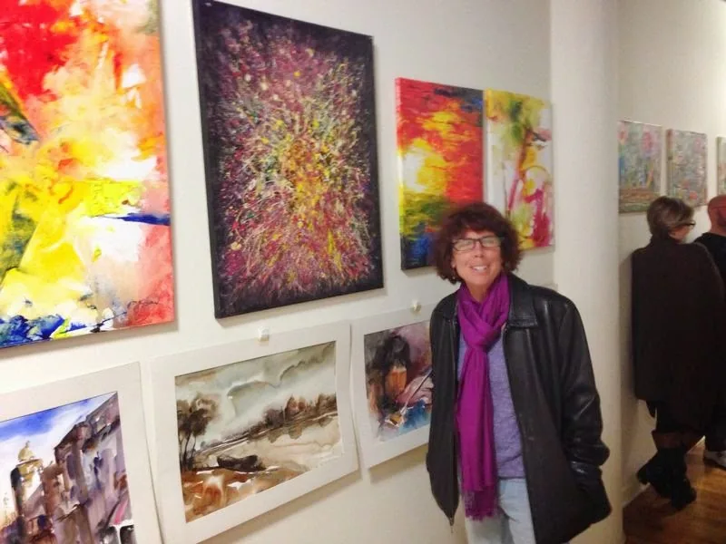
Open Studio Hartford
Artist of the Month exhibition
JayaKrishna Bandari Painter · Portraitist · Educator
Original oil paintings, watercolors and abstracts from a studio in Andhra Pradesh, India, and portraits commissioned from the photographs you treasure.
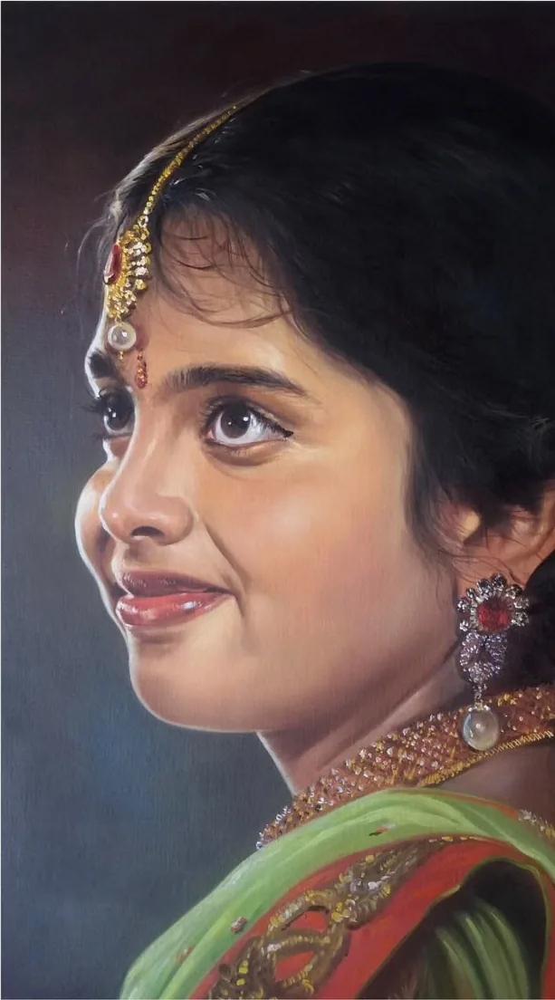
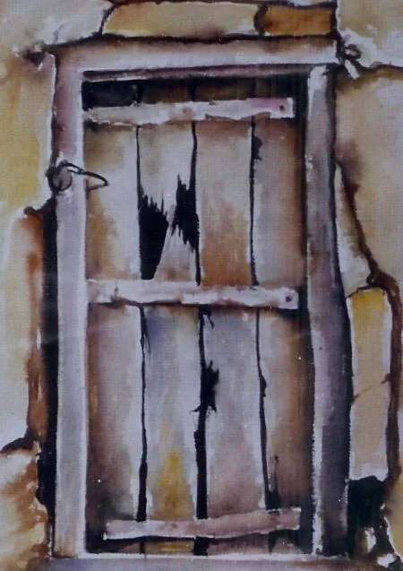
Girl in Profile, oil
The Old Door, watercolor
01 The collection
Every painting is one of a kind, signed by the artist and packed by hand for safe delivery.
02 Selected works
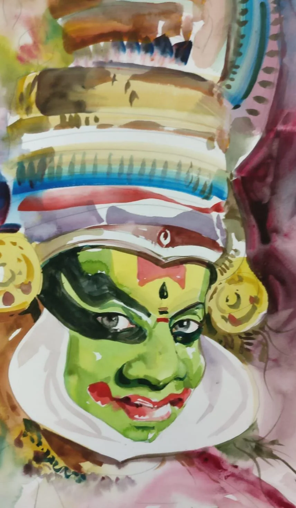
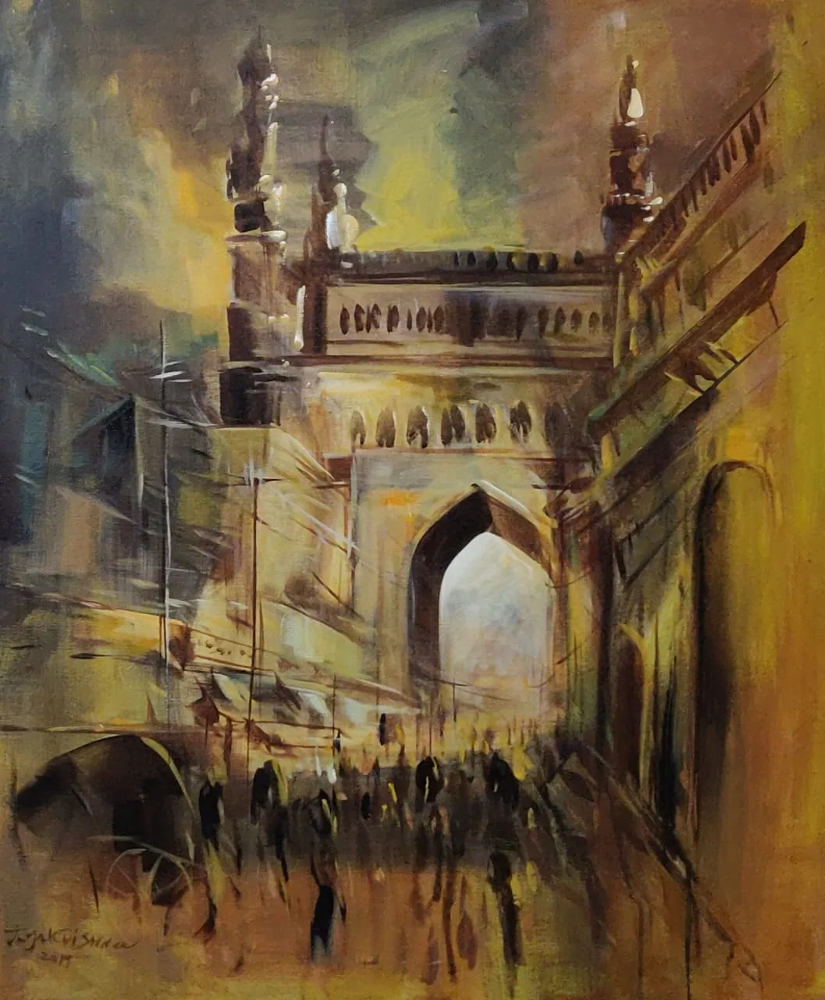
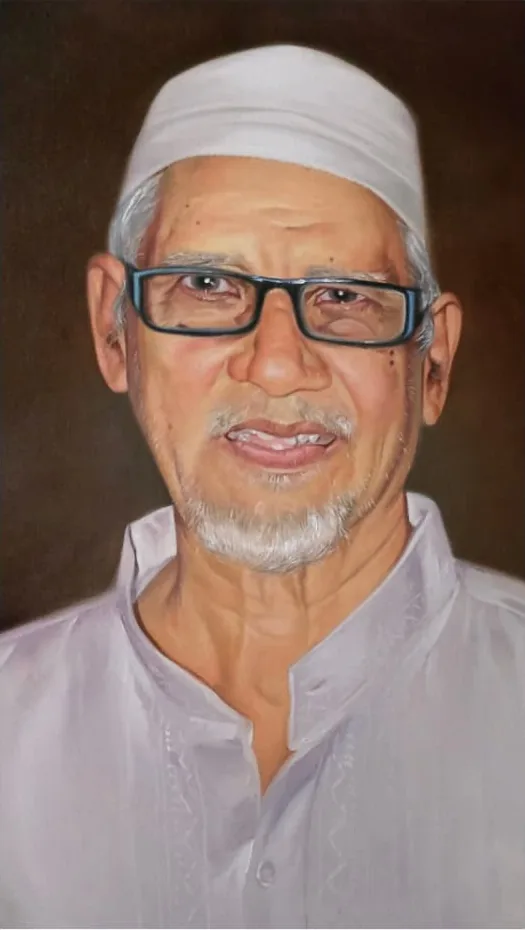
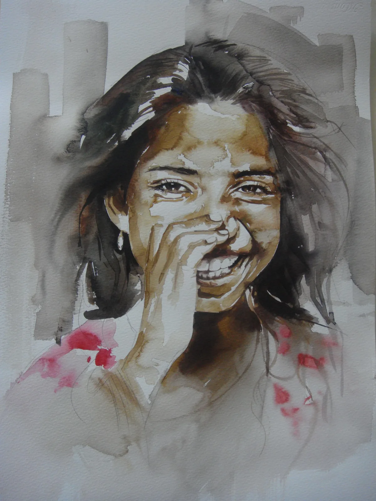
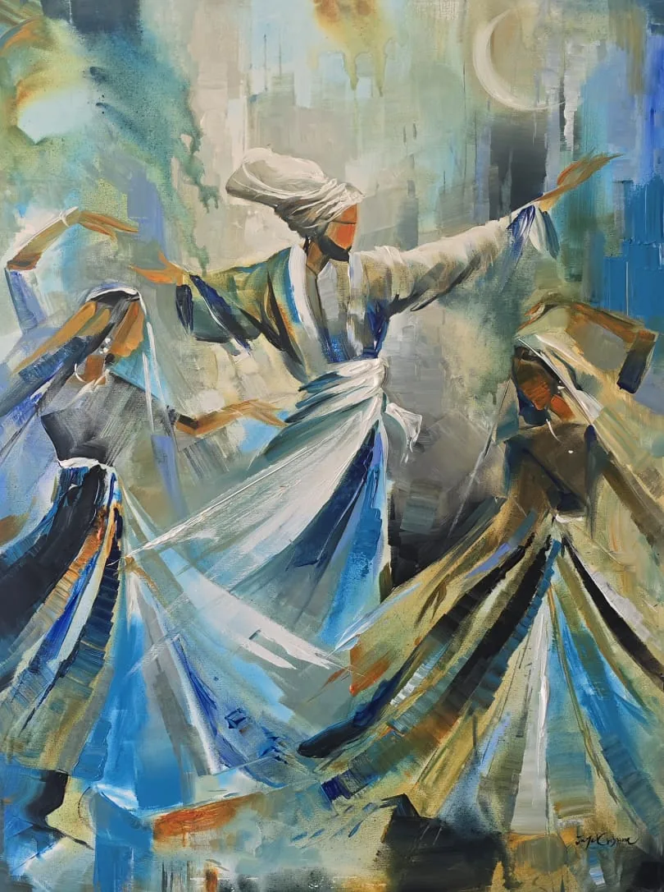
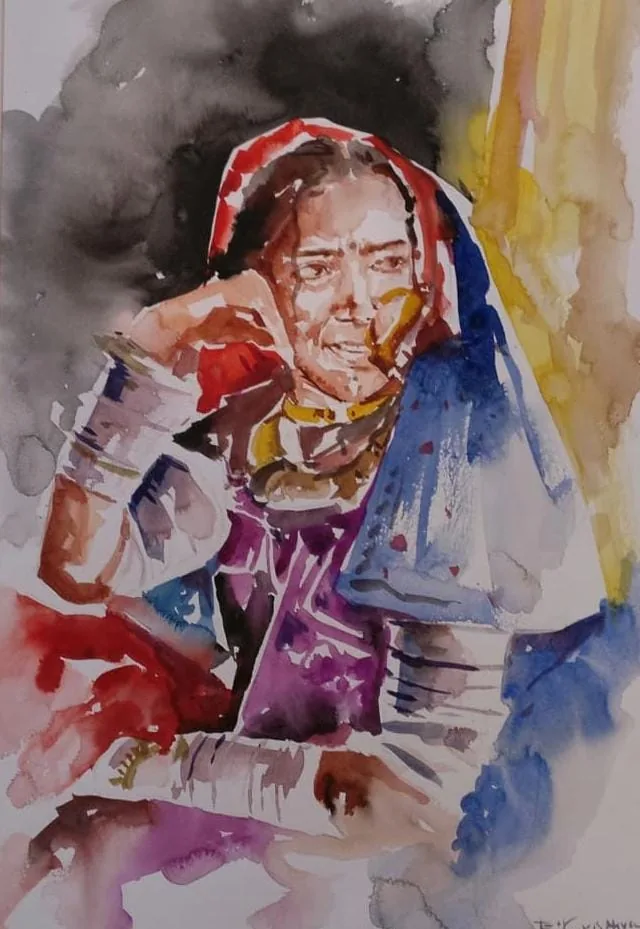
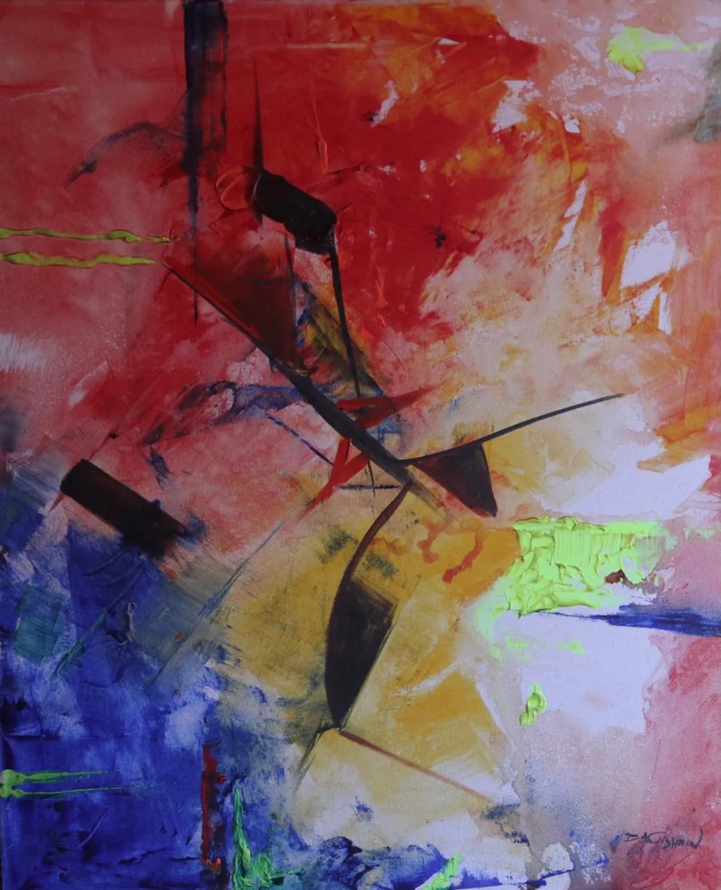
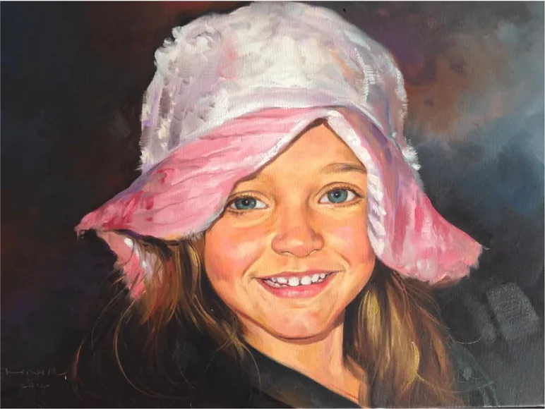
03 Portrait commissions
A hand-painted portrait of a child, a couple or a grandparent, painted by an artist with four decades of portrait commissions behind him.
On WhatsApp or by email.
Size, composition and timing.
Layer by layer, in the studio.
Packed and shipped to you.
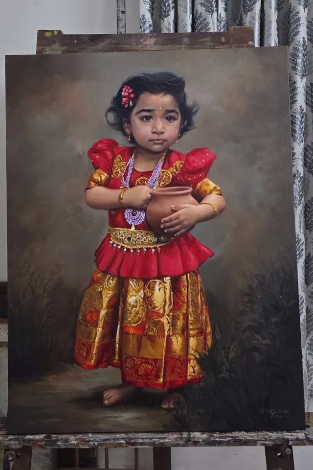
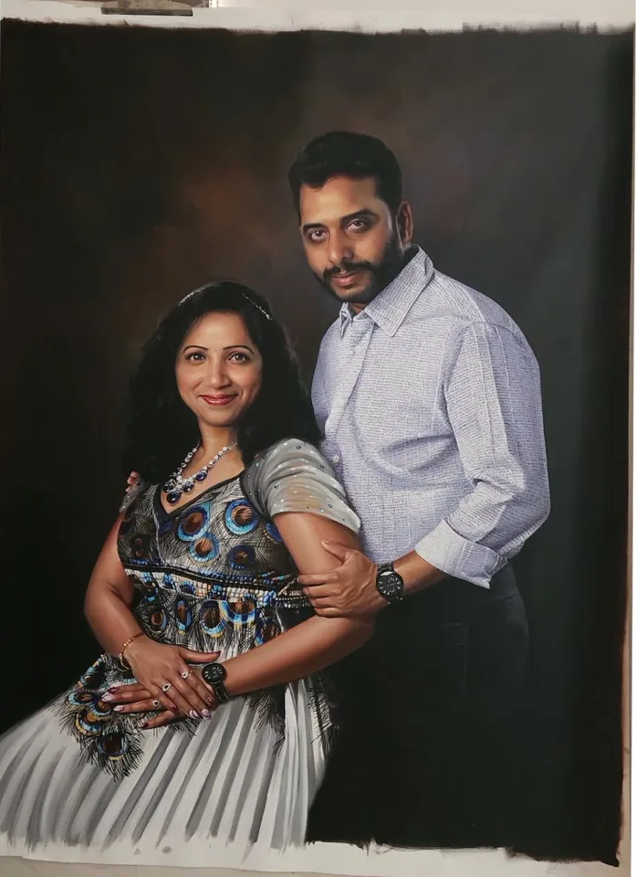
04 The artist
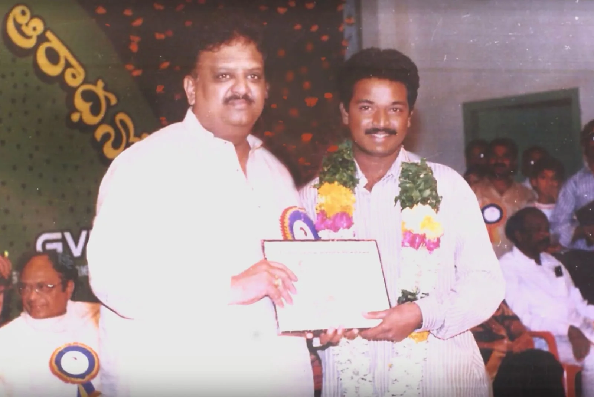
JayaKrishna Bandari came to painting as a natural vocation. His career began in the mid-1980s and grew through portrait commissions, gallery exhibitions, teaching and cinema.
He works across oil painting, portraits, watercolors, pen drawing, pencil shading, modern composition and abstraction, moving easily between a likeness and pure colour.
His paintings have appeared as background and set art in Indian cinema, from Aithe (2003) to Businessman (2012).
He has been honored by Carnatic maestro Mangalampalli Balamuralikrishna and by S. P. Balasubrahmanyam, and shown as Artist of the Month at Open Studio Hartford.
05 Honors & exhibitions
Solo and group exhibitions, including Artist of the Month at Open Studio Hartford, presented by Artists in Real Time.

Artist of the Month exhibition

Honored on stage
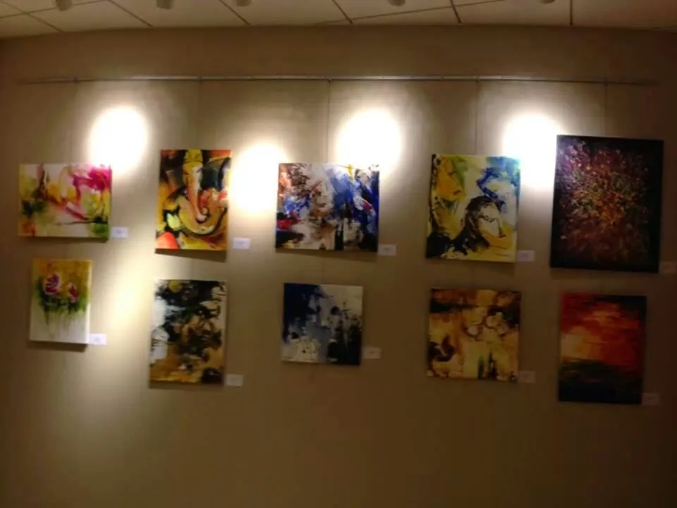
Solo & group shows
Enquiries
Ask about any work in the collection or start a portrait commission. Every message is answered by the studio.
Originals. Each one is painted by hand and signed by JayaKrishna.
Send a clear photograph and the size you'd like. The composition, canvas size and timing are agreed with you before painting begins.
Every painting is packed and shipped with care. For orders outside India, message on WhatsApp to confirm delivery to your country.
Yes. He has taught for over twenty-five years, training more than 1,500 students at every level.